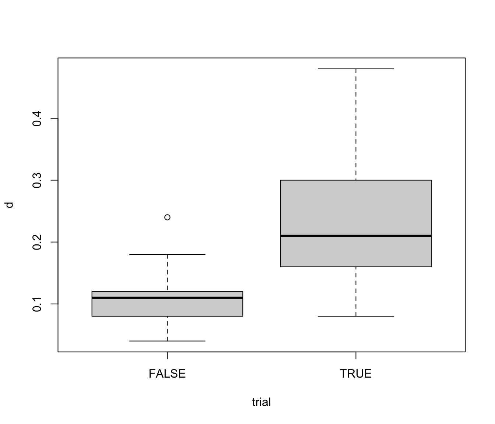

orangejuice.RdFrozen orange juice concentrate is packed in 6-oz cardboard cans. These cans are formed on a machine by spinning them from cardboard stock and attaching a metal bottom panel. A can is then inspected to determine whether, when filled, the liquid could possible leak either on the side seam or around the bottom joint. If this occurs, a can is considered nonconforming. The data were collected as 30 samples of 50 cans each at half-hour intervals over a three-shift period in which the machine was in continuous operation. From sample 15 used a new batch of cardboard stock was punt into production. Sample 23 was obtained when an inexperienced operator was temporarily assigned to the machine. After the first 30 samples, a machine adjustment was made. Then further 24 samples were taken from the process.
data(orangejuice)
A data frame with 54 observations on the following 4 variables:
number of defectives
sample sizes
trial samples (TRUE/FALSE)
Montgomery, D.C. (1991) Introduction to Statistical Quality Control, 2nd ed, New York, John Wiley & Sons, pp. 152--155.
data(orangejuice) orangejuice <- transform(orangejuice, d = D/size) describe(orangejuice, by = trial)#> ── trial = FALSE ─────────────────────────────────────────────────────────────────── #> #> Obs Mean Std.Dev. Min Max #> sample 24 42.5000 7.07107 31.00 54.00 #> D 24 5.5417 2.14637 2.00 12.00 #> size 24 50.0000 0.00000 50.00 50.00 #> d 24 0.1108 0.04293 0.04 0.24 #> #> ── trial = TRUE ──────────────────────────────────────────────────────────────────── #> #> Obs Mean Std.Dev. Min Max #> sample 30 15.5000 8.8034 1.00 30.00 #> D 30 11.5667 5.1171 4.00 24.00 #> size 30 50.0000 0.0000 50.00 50.00 #> d 30 0.2313 0.1023 0.08 0.48